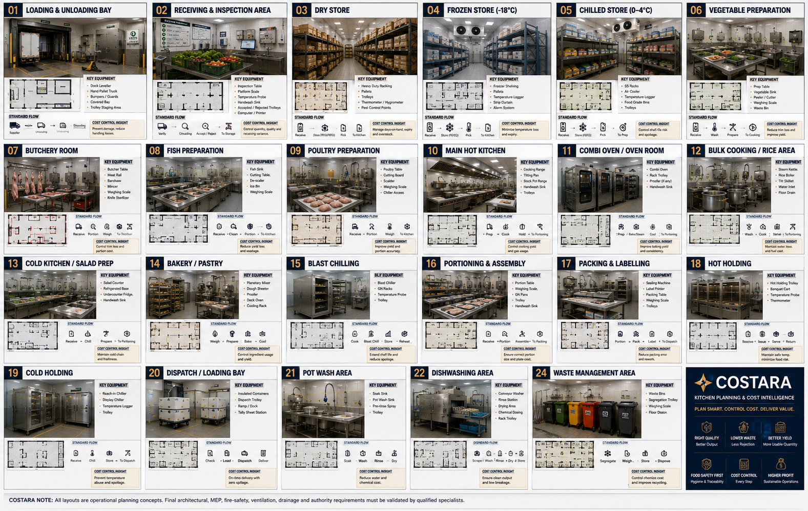

COSTARA • ISSUE 10 • KITCHEN PLANNING
THE COMPLETE PROFESSIONAL KITCHEN PLANNING GUIDE
From Receiving to Dispatch — Plan Every Room, Control Every Cost, Protect Food Safety.
A practical room-by-room guide for commercial kitchens, connecting operational flow, equipment planning, hygiene, HACCP thinking and cost-control discipline.

23 Operational Areas
- Loading & Unloading Bay
- Receiving & Inspection Area
- Dry Store
- Frozen Store (-18°C)
- Chilled Store (0–4°C)
- Vegetable Preparation
- Butchery Room
- Fish Preparation
- Poultry Preparation
- Main Hot Kitchen
- Combi Oven / Oven Room
- Bulk Cooking / Rice Area
- Cold Kitchen / Salad Prep
- Bakery / Pastry
- Blast Chilling
- Portioning & Assembly
- Packing & Labelling
- Hot Holding
- Cold Holding
- Dispatch / Loading Bay
- Pot Wash Area
- Dishwashing Area
- Waste Management Area
COSTARA Planning Principle
Good kitchen planning should support safe product flow, reduce unnecessary movement and handling, protect temperature control, separate incompatible activities, improve productivity and make operational cost visible at every stage.
Planning concepts are operational guidance. Final architectural, MEP, fire-safety, ventilation, drainage, food-safety and authority requirements must be validated by qualified specialists and applicable local regulations.